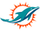
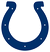
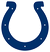
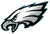
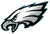
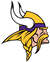

ReplAI Review - Week 8
New York Jets
39
@
38
Cincinnati Bengals
Justin Fields bounced back from a rough week to lead the Jets to their first win, rallying from a 31-16 deficit with late-game heroics. Breece Hall dominated with 18 carries for 133 yards and two second-half TDs, including a 4-yard pass from him to Mason Taylor with 1:54 remaining. Fields completed 21 of 32 for 244 yards as New York erupted for 502 total yards and 254 rushing yards in their highest-scoring game of the season. Read full recap →
Chicago Bears
16
@
30
Baltimore Ravens

Tyler Huntley delivered a stellar performance without Lamar Jackson, completing 17 of 22 for 186 yards with two TD passes as Baltimore snapped a four-game losing streak. Derrick Henry rushed for two touchdowns and 112 career rushing TDs, breaking a tie with Walter Payton for fifth all-time. The Ravens defense forced an interception that set up a 10-yard TD pass to Charlie Kolar, with Huntley's scrambling ability keeping Chicago's vaunted offense off-balance. Read full recap →

Miami Dolphins
34
@
10
Atlanta Falcons

Tua Tagovailoa threw four touchdown passes despite waking up with a severely swollen eye, wearing a helmet visor that teammates praised as "swaggy." Tagovailoa completed 20 of 26 for 205 yards with scoring passes to Jaylen Waddle, De'Von Achane, Malik Washington, and Ollie Gordon II as Miami dominated the short-handed Falcons. The Dolphins defense shut out Atlanta until the final minutes, holding star running back Bijan Robinson to just 25 rushing yards. Read full recap →
 Tennessee Titans
14
@
38
Indianapolis Colts

Tennessee Titans
14
@
38
Indianapolis Colts

Jonathan Taylor became the first player in NFL history to score three touchdowns in three straight games against the same opponent, rushing for 153 yards on just 12 carries. Daniel Jones threw three touchdown passes as Indianapolis moved to an NFL-best 7-1, with Taylor's 80-yard TD run highlighting a dominant ground attack. The Colts offense exploded for 277 rushing yards and remained unbeaten in four straight games while scoring at least 31 points in each. Read full recap →
Dallas Cowboys
24
@
44
Denver Broncos

A trio of rookies led Denver's dominant victory as the Broncos extended their winning streak to five games. R.J. Harvey scored three times, Bo Nix threw four touchdown passes including one to rookie Pat Bryant, and Jahdae Barron picked off Dak Prescott for his first career interception. Denver scored on seven of eight possessions after halftime and outgained Dallas 179 yards to 108 on the ground, with Nix completing 21 of 29 for 272 yards. Read full recap →
Washington Commanders
7
@
28
Kansas City Chiefs
Patrick Mahomes rallied the Chiefs from a halftime tie by throwing for 299 yards and three second-half touchdowns, with one going to Travis Kelce to tie the franchise record with 83 career scores. Kansas City's defense dominated the second half as the Chiefs won their fourth game in five, extending their streak against Washington to nine straight victories. After a bizarre first half filled with turnovers and failed fourth-down conversions, the Chiefs scored on seven of their last eight possessions. Read full recap →
 Buffalo Bills
40
@
9
Carolina Panthers
Buffalo Bills
40
@
9
Carolina Panthers

James Cook rushed for a career-high 216 yards and two touchdowns as Buffalo returned from its bye week with a dominant performance, improving to 8-0 following bye weeks. Josh Allen threw and ran for touchdowns while setting an NFL record as the first player to have a rushing and passing TD in 46 straight games. The Bills defense sacked Andy Dalton seven times and forced three turnovers, holding Carolina's defense to futility after the Panthers had allowed just 131 rushing yards over the previous three weeks. Read full recap →
 San Francisco 49ers
15
@
26
Houston Texans
San Francisco 49ers
15
@
26
Houston Texans
C.J. Stroud spread the ball around to nine different receivers without star Nico Collins, throwing for a season-high 318 yards and two touchdowns. Xavier Hutchinson led the group with 69 receiving yards and a 30-yard TD, while rookie Jaylin Noel added 63 yards in Houston's balanced offensive attack. Kamari Lassiter's interception of Mac Jones sealed the victory as the Texans finished strong defensively, holding Christian McCaffrey to just 68 total yards. Read full recap →
 New York Giants
20
@
38
Philadelphia Eagles

New York Giants
20
@
38
Philadelphia Eagles

Saquon Barkley erupted for 150 rushing yards and a 65-yard touchdown on his first carry against his former team before exiting with a groin injury. Jalen Hurts threw four touchdown passes, including a 40-yard strike to Jahan Dotson, as Philadelphia's offense clicked with 277 rushing yards combined. The Eagles dominated the line of scrimmage throughout, with Dallas Goedert catching two scores as Philadelphia improved to 6-2 and evened the season series against their NFC East rivals. Read full recap →
 Cleveland Browns
13
@
32
New England Patriots
Cleveland Browns
13
@
32
New England Patriots

Drake Maye threw three second-half touchdown passes as New England extended its home winning streak to nine games after bringing back individual pregame introductions. The Patriots' defense intercepted Dillon Gabriel twice while Myles Garrett recorded five sacks—a franchise record—in a losing effort for Cleveland's struggling road team. Maye finished 18 of 24 for 282 yards with TD passes to Hunter Henry, Stefon Diggs, and Kayshon Boutte. Read full recap →
 Tampa Bay Buccaneers
23
@
3
New Orleans Saints
Tampa Bay Buccaneers
23
@
3
New Orleans Saints

Anthony Nelson delivered a career day with an interception returned for a touchdown, two sacks, and a forced fumble as Tampa Bay's defense forced four turnovers. Sean Tucker scored on a fourth-down rush while the Buccaneers held New Orleans without an offensive touchdown, forcing coach Kellen Moore to insert rookie Tyler Shough late in the third quarter. Baker Mayfield passed for 152 yards in a game where Tampa Bay's offense managed just three of 13 third-down conversions yet still dominated the Saints. Read full recap →
Pittsburgh Steelers
25
@
35
Green Bay Packers

Jordan Love passed for 360 yards and three touchdowns, completing a franchise-record-tying 20 straight passes spanning the end of the first half and most of the second, as Green Bay outdueled Aaron Rodgers in an emotional homecoming. Tucker Kraft caught seven passes for 143 yards and two touchdowns while Love completed 29 of 35 in his most impressive performance yet. The Packers dominated the second half, erasing a nine-point deficit to win at Pittsburgh for the first time since 1970. Read full recap →

Minnesota Vikings
10
@
37
Los Angeles Chargers
Justin Herbert threw three touchdown passes and rushed for 62 yards as Los Angeles bounced back decisively from an embarrassing loss to Indianapolis. The Chargers scored 30 points for the first time while never punting, with Ladd McConkey catching a 27-yard TD and Kimani Vidal rushing for 117 yards. Minnesota managed just 12 first downs and was outgained significantly as Carson Wentz struggled on short rest, throwing for 144 yards with one interception while getting sacked five times. Read full recap →